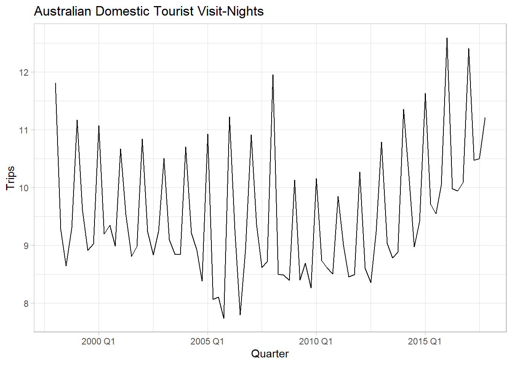

Chapter 1 Toolbox
This section deals with fundamental concepts in time series analysis. Time series analysis typically uses different data structures than the standard data.frame and tibble of other analyses. The fable package provides a framework for piped “tidy” modeling that improves on the conventional lm(formula, data) framework. The subsequent modeling chapters make use of standard benchmarking methods, prediction intervals, and accuracy evaluation methods presented here.
1.1 R Structures
Use a tsibble object to work with time series data. A tsibble, from the package of the same name, is a time-series tibble. Unlike the older, more common ts, zoo, and xts objects, a tsibble preserves the time index, making heterogeneous data structures possible. For example, you can re-index a tsibble from monthly to yearly analysis, or include one or more features per time element. Since the tsibble is relatively new, you will encounter the other frameworks and should at least be familiar with them.
Let’s work with the prison_population.csv file accompanying Hyndman’s text to create time series structures with each framework. The data set is quarterly prison population counts grouped by several features. In essence, it is several time series (State x Gender x Legal x Indigenous) within one file.
prison <- readr::read_csv("https://OTexts.com/fpp3/extrafiles/prison_population.csv")
head(prison)
## # A tibble: 6 × 6
## Date State Gender Legal Indigenous Count
## <date> <chr> <chr> <chr> <chr> <dbl>
## 1 2005-03-01 ACT Female Remanded ATSI 0
## 2 2005-03-01 ACT Female Remanded Non-ATSI 2
## 3 2005-03-01 ACT Female Sentenced ATSI 0
## 4 2005-03-01 ACT Female Sentenced Non-ATSI 5
## 5 2005-03-01 ACT Male Remanded ATSI 7
## 6 2005-03-01 ACT Male Remanded Non-ATSI 58
dim(prison)
## [1] 3072 6ts, zoo, and xts
ts is the base R time series package. The ts object is essentially a matrix of observations indexed by a chronological identifier. Because it is a matrix, any descriptive attributes need to enter as numeric, perhaps by one-hot encoding, or pivoting the data (yuck). But since there is only one row per time observation, the descriptive attributes cannot really act as grouping variables. Another limitation of a ts is that it does not recognize irregularly spaced time series.
Define a ts object with ts(x, start, frequency) where frequency is the number of observations in the seasonal pattern: 7 for daily observations with a week cycle; 5 for weekday observations in a week cycle; 24 for hourly observations in a day cycle, 24x7 for hourly observations in a week cycle, etc. prison is quarterly observations starting with 2005 Q1. Had the series started at 2005 Q2, you’d specify start = c(2005, 2). I’ll pull a single time series from the file with a filter() statement.
prison_ts <- prison %>%
filter(State == "ACT" & Gender == "Male" & Legal == "Remanded" & Indigenous == "ATSI") %>%
arrange(Date) %>%
select(Count) %>%
ts(start = 2005, frequency = 4)
str(prison_ts)## Time-Series [1:48, 1] from 2005 to 2017: 7 7 9 9 12 9 8 7 6 11 ...
## - attr(*, "dimnames")=List of 2
## ..$ : NULL
## ..$ : chr "Count"zoo (Zeileis’s ordered observations) provides methods similar to those in ts, but also supports irregular time series. A zoo object contains an array of data values and an index attribute to provide information about the data ordering. zoo was introduced in 2014.
xts (extensible time series) extends zoo. xts objects are more flexible than ts objects while imposing reasonable constraints to make them truly time-based. An xts object is essentially a matrix of observations indexed by a time object. Create an xts object with xts(x, order.by) where order.by is a vector of dates/times to index the data. You can also add metadata to the xts object by declaring name-value pairs such as born = as.POSIXct("1899-05-08").
## Warning: package 'xts' was built under R version 4.3.1## Warning: package 'zoo' was built under R version 4.3.1x <- prison %>%
filter(State == "ACT" & Gender == "Male" & Legal == "Remanded" & Indigenous == "ATSI") %>%
arrange(Date)
prison_xts <- xts(x$Count, order.by = x$Date,
State = "ACT", Gender = "Male", Legal = "Remanded", Indigenous = "ATSI")
str(prison_xts)## An xts object on 2005-03-01 / 2016-12-01 containing:
## Data: double [48, 1]
## Index: Date [48] (TZ: "UTC")
## xts Attributes:
## $ State : chr "ACT"
## $ Gender : chr "Male"
## $ Legal : chr "Remanded"
## $ Indigenous: chr "ATSI"tsibble
A tsibble object is a tibble uniquely defined by key columns plus a date index column. This structure accommodates multiple series, and descriptive attribute columns. The date index can be a Date, period, etc. (see tsibble() help file). Express weekly time series with yearweek(), monthly time series with yearmonth(), or quarterly (like here) with yearquarter().
prison_tsibble <- prison %>%
mutate(Date = yearquarter(Date)) %>%
rename(Qtr = Date) %>%
tsibble(key = c(State, Gender, Legal, Indigenous), index = Qtr)
head(prison_tsibble)## # A tsibble: 6 x 6 [1Q]
## # Key: State, Gender, Legal, Indigenous [1]
## Qtr State Gender Legal Indigenous Count
## <qtr> <chr> <chr> <chr> <chr> <dbl>
## 1 2005 Q1 ACT Female Remanded ATSI 0
## 2 2005 Q2 ACT Female Remanded ATSI 1
## 3 2005 Q3 ACT Female Remanded ATSI 0
## 4 2005 Q4 ACT Female Remanded ATSI 0
## 5 2006 Q1 ACT Female Remanded ATSI 1
## 6 2006 Q2 ACT Female Remanded ATSI 1A tsibble behaves like a tibble, so you can use *tidyverse** verbs. The only thing that will trip you up is that tsibble objects are grouped by the index - group_by() operations only group non-index columns while retaining the index. Use index_by() if you need to summarize at a new time level (e.g., year).
# Group by State retains the Qtr index column.
prison_tsibble %>%
group_by(State) %>%
summarize(sum_Count = sum(Count))
## # A tsibble: 384 x 3 [1Q]
## # Key: State [8]
## State Qtr sum_Count
## <chr> <qtr> <dbl>
## 1 ACT 2005 Q1 178
## 2 ACT 2005 Q2 183
## 3 ACT 2005 Q3 187
## 4 ACT 2005 Q4 204
## 5 ACT 2006 Q1 190
## 6 ACT 2006 Q2 190
## 7 ACT 2006 Q3 165
## 8 ACT 2006 Q4 179
## 9 ACT 2007 Q1 172
## 10 ACT 2007 Q2 160
## # ℹ 374 more rows
# But you can change the Qtr index aggregation level with index_by()
prison_tsibble %>%
index_by(Year = ~ year(.)) %>%
group_by(State) %>%
summarise(sum_Count = sum(Count))
## # A tsibble: 96 x 3 [1Y]
## # Key: State [8]
## State Year sum_Count
## <chr> <dbl> <dbl>
## 1 ACT 2005 752
## 2 ACT 2006 724
## 3 ACT 2007 673
## 4 ACT 2008 697
## 5 ACT 2009 668
## 6 ACT 2010 842
## 7 ACT 2011 946
## 8 ACT 2012 1085
## 9 ACT 2013 1146
## 10 ACT 2014 1336
## # ℹ 86 more rows
# Add group_by_key() to retain the key
prison_tsibble %>%
group_by_key() %>%
index_by(Year = ~ year(.)) %>%
summarize(sum_Count = sum(Count))
## # A tsibble: 768 x 6 [1Y]
## # Key: State, Gender, Legal, Indigenous [64]
## # Groups: State, Gender, Legal [32]
## State Gender Legal Indigenous Year sum_Count
## <chr> <chr> <chr> <chr> <dbl> <dbl>
## 1 ACT Female Remanded ATSI 2005 1
## 2 ACT Female Remanded ATSI 2006 3
## 3 ACT Female Remanded ATSI 2007 3
## 4 ACT Female Remanded ATSI 2008 9
## 5 ACT Female Remanded ATSI 2009 6
## 6 ACT Female Remanded ATSI 2010 5
## 7 ACT Female Remanded ATSI 2011 6
## 8 ACT Female Remanded ATSI 2012 2
## 9 ACT Female Remanded ATSI 2013 4
## 10 ACT Female Remanded ATSI 2014 4
## # ℹ 758 more rows
# If you don't care about the time index, convert the tsibble back to a tibble.
prison_tsibble %>%
as_tibble() %>%
group_by(State) %>%
summarize(sum_Count = sum(Count))
## # A tibble: 8 × 2
## State sum_Count
## <chr> <dbl>
## 1 ACT 12003
## 2 NSW 491924
## 3 NT 58193
## 4 QLD 290794
## 5 SA 101606
## 6 TAS 24367
## 7 VIC 234734
## 8 WA 2202561.2 Fitting Models
Consider whether you are fitting a model for explanatory variable inference or for predictive purposes. If explanation is your goal, your workflow will be fitting a model, verifying the model assumptions related to inference, then summarizing the model parameters. If prediction is your goal, your workflow will be comparing multiple models by cross-validating the results against a hold-out data set, then making predictions.
Fit a model using fabletools::model().1 You can even fit multiple models at once. Let’s fit a simple model using the GAFA stock prices data set in tsibbledata. GAFA is daily stock prices from 2014-2018 for several companies. We’ll work with Google. The data is indexed by date, but we’ll re-index to “trading day” since the trading days are irregularly spaced.
goog <- tsibbledata::gafa_stock %>%
filter(Symbol == "GOOG", year(Date) >= 2015) %>%
# re-index on trading day since markets not open on weekends, holidays
arrange(Date) %>%
mutate(trading_day = row_number()) %>%
update_tsibble(index = trading_day, regular = TRUE)
head(goog)
## # A tsibble: 6 x 9 [1]
## # Key: Symbol [1]
## Symbol Date Open High Low Close Adj_Close Volume trading_day
## <chr> <date> <dbl> <dbl> <dbl> <dbl> <dbl> <dbl> <int>
## 1 GOOG 2015-01-02 526. 528. 521. 522. 522. 1447600 1
## 2 GOOG 2015-01-05 520. 521. 510. 511. 511. 2059800 2
## 3 GOOG 2015-01-06 512. 513. 498. 499. 499. 2899900 3
## 4 GOOG 2015-01-07 504. 504. 497. 498. 498. 2065100 4
## 5 GOOG 2015-01-08 495. 501. 488. 500. 500. 3353600 5
## 6 GOOG 2015-01-09 502. 502. 492. 493. 493. 2069400 6
dim(goog)
## [1] 1006 9Let’s fit a naive model (projection of last value) to Google’s Close from 2015, then predict values from Jan 2016. We’ll create an 80:20 train-test split (test should be ~20% or at least as long as the anticipated forecast.).
# Segment with `filter()`, or `group_by()` + `slice()`.
goog_train <- goog %>% filter(year(Date) == 2015)
goog_test <- goog %>% filter(yearmonth(Date) == yearmonth("2016 Jan"))
# Train model
goog_mdl <- goog_train %>%
model(mdl_naive = NAIVE(Close))
# Generate predictions (forecast)
goog_fc <- goog_mdl %>%
forecast(new_data = goog_test)The autoplot() and autolayer() functions take a lot of the headache out of plotting the results, especially since forecast() tucks away the confidence intervals in a distribution list object.
# Consider using autoplot() + autolayer()...
# goog_fc %>%
# autoplot(color = "goldenrod") +
# autolayer(goog_train, Close, color = "goldenrod")
goog_fc_2 <- goog_fc %>%
mutate(mu = map_dbl(Close, ~unlist(.) %>% .["mu"]),
sigma = map_dbl(Close, ~unlist(.) %>% .["sigma"]),
ci_025 = qnorm(.025, mu, sigma),
ci_100 = qnorm(.100, mu, sigma),
ci_900 = qnorm(.900, mu, sigma),
ci_975 = qnorm(.975, mu, sigma)) %>%
select(trading_day, Date, Close, mu, sigma, ci_025:ci_975)
bind_rows(goog_train, goog_test) %>%
ggplot(aes(x = Date)) +
geom_line(aes(y = Close), color = "goldenrod") +
geom_line(data = goog_fc_2, aes(y = mu), color = "goldenrod", size = 1) +
geom_ribbon(data = goog_fc_2,
aes(ymin = ci_025, ymax = ci_975),
fill = "goldenrod", alpha = .2) +
geom_ribbon(data = goog_fc_2,
aes(ymin = ci_100, ymax = ci_900),
fill = "goldenrod", alpha = .2) +
theme_light() +
theme(legend.position = "none") +
labs(title = "20d naive forecast from model fit to CY-2015",
caption = "Shaded area is 80%- and 95% confidence interval.",
x = "Trading Day", y = "Closing Price")## Warning: The output of `fortify(<fable>)` has changed to better suit usage with the ggdist package.
## If you're using it to extract intervals, consider using `hilo()` to compute intervals, and `unpack_hilo()` to obtain values.## Warning: Using `size` aesthetic for lines was deprecated in ggplot2 3.4.0.
## ℹ Please use `linewidth` instead.
## This warning is displayed once every 8 hours.
## Call `lifecycle::last_lifecycle_warnings()` to see where this warning was
## generated.## Warning: The output of `fortify(<fable>)` has changed to better suit usage with the ggdist package.
## If you're using it to extract intervals, consider using `hilo()` to compute intervals, and `unpack_hilo()` to obtain values.
## The output of `fortify(<fable>)` has changed to better suit usage with the ggdist package.
## If you're using it to extract intervals, consider using `hilo()` to compute intervals, and `unpack_hilo()` to obtain values.
1.3 Evaluating Models
Evaluate the model fit with residuals diagnostics.2 broom::augment() adds three columns to the model cols: .fitted, .resid, and .innov. .innov is the residual from the transformed data (if no transformation, it just equals .resid).
Innovation residuals should be independent random variables normally distributed with mean zero and constant variance (the normality and variance conditions are only required for inference and prediction intervals). Happily, feasts has just what you need.

The autocorrelation plot above supports the independence assumption. The histogram plot tests normality (it is pretty normal, but the right tail is long). The residuals plot tests mean zero and constant variance. You can carry out a portmanteau test test on the autocorrelation assumption. Two common tests are the Box-Pierce and the Ljung-Box. These tests check the likelihood of a combination of autocorrelations at once, without testing any one correlation - kind of like an ANOVA test. The Ljung-Box test statistic is a sum of squared \(k\)-lagged autocorrelations, \(r_k^2\),
\[Q^* = T(T+2) \sum_{k=1}^l(T-k)^{-1}r_k^2.\]
The test statistic has a \(\chi^2\) distribution with \(l - K\) degrees of freedom (where \(K\) is the number of parameters in the model). Use \(l = 10\) for non-seasonal data and \(l = 2m\) for seasonal data. If your model has no explanatory variables, \(K = 0.\)
## # A tibble: 1 × 4
## Symbol .model lb_stat lb_pvalue
## <chr> <chr> <dbl> <dbl>
## 1 GOOG mdl_naive 7.91 0.637The p-value is not under .05, so do not reject the assumption of no autocorrelation - i.e., the assumption of white noise.
1.4 Evaluating Accuracy
Some forecasting methods are extremely simple and surprisingly effective. The mean method projects the historical average, \(\hat{y}_{T+h|T} = \bar{y}.\) The naive method projects the last observation, \(\hat{y}_{T+h|T} = y_T.\) The seasonal naive method projects the last seasonal observation, \(\hat{y}_{T+h|T} = y_{T+h-m(k+1)}.\) The drift method projects the straight line from the first and last observation, \(\hat{y}_{T+h|T} = y_T + h\left(\frac{y_T - y_1}{T-1}\right).\) The plot below of tsibbledata::aus_production shows the four forecast benchmarks.
tsibbledata::aus_production %>%
# same thing as
# filter(Quarter >= yearquarter("1970 Q1") & Quarter <= yearquarter("2004 Q4")) %>%
filter_index("1995 Q1" ~ "2007 Q4") %>%
model(Mean = MEAN(Beer),
Naive = NAIVE(Beer),
SNaive = SNAIVE(Beer),
Drift = RW(Beer ~ drift())) %>%
forecast(h = 8) %>%
ggplot(aes(x = Quarter)) +
geom_line(aes(y = .mean, color = .model), size = 1) +
geom_line(data = tsibbledata::aus_production %>% filter_index("1995 Q1" ~ "2009 Q4"),
aes(y = Beer),
color = "darkgrey", size = 1) +
theme_light() +
guides(color = guide_legend(title = "Forecast")) +
labs(title = "Simple forecast methods are useful benchmarks.",
x = NULL, y = NULL,
caption = "Source: Quarterly beer production (ML) from tsibbledata::aus_production.")## Warning: The output of `fortify(<fable>)` has changed to better suit usage with the ggdist package.
## If you're using it to extract intervals, consider using `hilo()` to compute intervals, and `unpack_hilo()` to obtain values.
Evaluate the forecast accuracy with the test data (aka, “hold-out set”, and “out-of-sample data”). The forecast error is the difference between the observed and forecast value, \(e_{T+h} = y_{T+h} - \hat{y}_{t+h|T}.\) Forecast errors differ from model residuals in the data (train vs test) and because forecast values are (usually) multi-step forecasts which include prior forecast values as inputs.
There are a few benchmark metrics to evaluate a fit based on the errors.
- MAE. Mean absolute error, \(mean(|e_t|)\)
- RMSE. Root mean squared error, \(\sqrt{mean(e_t^2)}\)
- MAPE. Mean absolute percentage error, \(mean(|e_t / y_t|) \times 100\)
- MASE. Mean absolute scaled error, \(MAE/Q\) where \(Q\) is a scaling constant calculated as the average one-period change in the outcome variable (error from a one-step naive forecast).
The MAE and RMSE are on the same scale as the data, so they are only useful for comparing models fitted to the same series. MAPE is unitless, but does not work for \(y_t = 0\), and it assumes a meaningful zero (ratio data). The MASE is most useful for comparing data sets of different units.
Use accuracy() to evaluate a model. Comparing the naive, drift, and mean methods for forecasting the Google stock price, the naive model wins on all measures.
goog_mdl <- goog_train %>%
model(Naive = NAIVE(Close),
Drift = RW(Close ~ drift()),
Mean = MEAN(Close))
goog_fc <- goog_mdl %>%
forecast(new_data = goog_test)
ggplot() +
geom_line(data = goog_fc, aes(x = trading_day, y = .mean, color = .model)) +
geom_line(data = bind_rows(goog_train, goog_test), aes(x = trading_day, y = Close)) +
theme_light() +
scale_y_continuous(labels = scales::dollar_format()) +
labs(title = "Comparison of three models.",
subtitle = "Google stock price predicted over 19 days.",
x = "Trading Day", y = "Closing Price", color = "Forecast")## Warning: The output of `fortify(<fable>)` has changed to better suit usage with the ggdist package.
## If you're using it to extract intervals, consider using `hilo()` to compute intervals, and `unpack_hilo()` to obtain values.
# Or just this.
# autoplot(goog_fc, bind_rows(goog_train, goog_test), level = NULL)
accuracy(goog_fc, goog) %>%
select(.model, RMSE, MAE, MAPE, MASE)## # A tibble: 3 × 5
## .model RMSE MAE MAPE MASE
## <chr> <dbl> <dbl> <dbl> <dbl>
## 1 Drift 53.1 49.8 6.99 6.99
## 2 Mean 118. 117. 16.2 16.4
## 3 Naive 43.4 40.4 5.67 5.67There is a better way of evaluating a model than with a single test set. Time series cross-validation breaks the dataset into multiple training sets by setting the cutoff at varying points and then setting the test set to be a single steps ahead of the horizon. Function stretch_tsibble() creates a tsibble of initial size .init then appends additional data sets of increasing size .step.
goog_train_cv <- goog %>%
filter(year(Date) == 2015) %>%
stretch_tsibble(.init = 3, .step = 1) %>%
# move .id next to the other key col
relocate(Date, Symbol, .id)
# 250 keys!
goog_train_cv
goog_fc <- goog_train_cv %>%
# Fit a model for each key
model(RW(Close ~ drift())) %>%
# 8 forecast rows per model = 250 * 8 = 2,000 rows
forecast(h = 8) %>%
# Capture the forecast period for comparison
group_by(.id) %>%
mutate(h = row_number()) %>%
ungroup()
goog_fc %>%
accuracy(data = goog %>% filter(year(Date) == 2015), by = c("h", ".model")) %>%
select(h, RMSE)